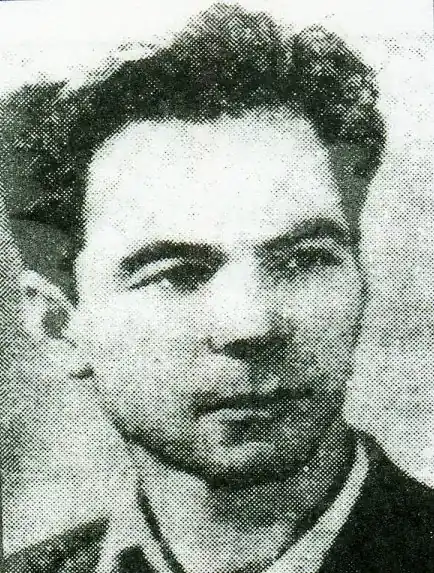

Палагута Микола Семенович народився 7 грудня 1930 року в селі Курячівка Марківського району Луганської області.
Микола Семенович закінчив Літературний інститут ім. М.Горького . Член Національної спілки письменників , видав 25 дитячих книжок, надвичайно світлих і добрих . Але шлях у літературу пролягав і через виробничі цехи: працював токарем на заводах Буковини. За рядками багатьох поезій проглядає власна біографія поета. Дитина війни, зустрів Перемогу підлітком, якому в числі інших "належало піднімати країну. Тоді було справою честі ходити у засмальцьованій спецівцці, з руками в синяках від роботи з металом."— зазначається в передмові до книги "Голубая лошадка", однієї з небагатьох, присвяченої підліткам.
Помер 21 вересня 1988 р. Похований у Чернівцях на Алеї почесних городян. Книги поета: К солнцу упрямый шаг (1962). Лесной пожар (1965). Бурбура (1967). Небесный трамвай (1969). Илько (1970). Серебряный ключ (1971). Кто что умеет (1972). Отважный Бреккеке (1974). Сказание о танкисте (1975). День работою красен (1976). Звёздные электромонтёры (1977). Вот и я художник (1978) Песня красных знамён (1978). Зайдите к бабушке моей (1978). Про строителей, про ГЭС, про зверюшек и про лес (1979). Быль со сказкой пополам (1980). Весёлый мастер (1981). Солнечный ключ (1981). Потешный паравоз (1984). Голубая лошадка (1986). Семь сосен (1986). Хозяин горных дорог (1988). Время снегиря (1990). Про будову і про ГЕС, про звіряток і ліс чудес (2012).